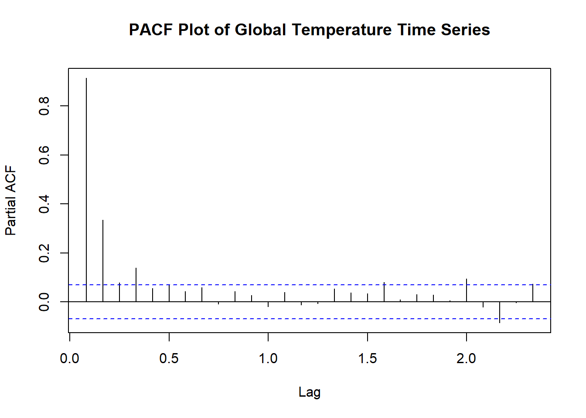
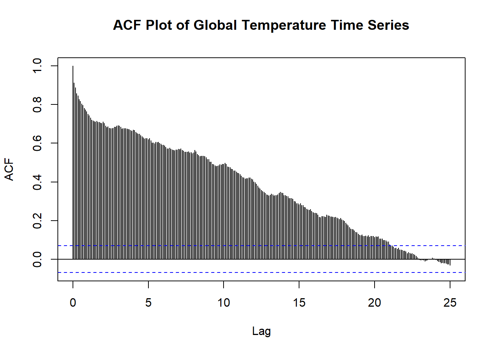

Chapter 2 Modelling Time Series
As mentioned before, a time series must be stationary for it to be used to predict well founded values. We will go over several models that we can create in order to allow forecasting.
Please note that the first 3 models we cover, AR, MA, and ARMA, can be used on already stationary time series in order to allow them to predict better values. The remaining models are used on non-stationary time series.
2.1 AR and MA
Two of the most common models in time series are the Autoregressive (AR) models and the Moving Average (MA) models.
Autoregressive Model: AR(p)
The autoregressive model uses observations from preivous time steps as input to a regression equations to predict the value at the next step. The AR model takes in one argument, p, which determines how many previous time steps will be inputted.
The order, p, of the autoregressive model can be deterimined by looking at the partial autocorrelation function (PACF). The PACF gives the partial correlation of a stationary time series with its own lagged values, regressed of the time series at all shorter lags.
Let’s take a look at the PACF plot for the global temperature time series using the pacf() function in R.

What should we look for in this plot? The primary goal is to look for the number of significant spikes outside of the blue confidence intervals. In this plot, I would determine there to be 2 spikes, one at 0.1 and the other at 0.3. The spike at the 0 does not count and any spikes outside of the blue later in the plot are likely due to random error. Therefore, this looks like an AR(2) model.
Let’s look at an AR(2) model for the global temp time series. You can use the ar() function in R; however, I recommend using the Arima() function from the forecast package because we’ll be using it later on in this chapter.
# the first index in the order argument represents the order of the AR(2) model
ar.model <- Arima(temp.ts, order = c(2,0,0))
ar.model## Series: temp.ts
## ARIMA(2,0,0) with non-zero mean
##
## Coefficients:
## ar1 ar2 mean
## 0.588 0.3700 0.2697
## s.e. 0.033 0.0332 0.0908
##
## sigma^2 estimated as 0.01234: log likelihood=617.65
## AIC=-1227.3 AICc=-1227.25 BIC=-1208.6So, this is our AR(2) model. How do we know it it’s a good model? We will compute other models first and then talk about how to compare them.
Moving Average Model: MA(q)
The moving average model is a time series model that accounts for very short-run autocorrelation. It basically states that the next observation is the mean of every past observation. The order of the moving average model, q, can usually be estimated by looking at the ACF plot of the time series. Let’s take a look at the ACF plot again.

As we have seen, this ACF plot takes a very long time to converge. What does this mean? This likely means that making a moving average model of this time series would not fix the problem of not having a stationary time series. Thus, the MA model will likely not be a good model to forecast with; however, for the sake of comparing models, we will still view one.
Let’s looks at an MA(5) model. Usually, we would pick order, q, for how many signficiant spikes there are in the ACF plot; however, considering that there are hundreds in this example, we will just use 5. Careful: if you use too high of an order, it can result in too many predictors in the model which may cause overfitting.
# the third index in the order argument represents the order of the MA(5) model.
ma.model <- Arima(temp.ts, order = c(0,0,5))
ma.model## Series: temp.ts
## ARIMA(0,0,5) with non-zero mean
##
## Coefficients:
## ma1 ma2 ma3 ma4 ma5 mean
## 0.8056 0.8663 0.6675 0.5288 0.2949 0.2479
## s.e. 0.0349 0.0420 0.0402 0.0340 0.0299 0.0197
##
## sigma^2 estimated as 0.01799: log likelihood=470.17
## AIC=-926.35 AICc=-926.2 BIC=-893.61We didn’t cover the actual formulas and notation of the models; however, if this interests you, view this webiste below for more details. Formulas Behind AR and MA Models
The orders of the AR and the MA models or usually picked by the number of significant spikes in the PACF and ACF plots respectively; however there are other conditions as well that can be seen if you click here.
2.2 ARMA, ARIMA, AND SARIMA
The autoregressive moving average model (ARMA), autoregressive integrated moving average model (ARIMA) and the seasonal autoregressive integrated moving average model (SARIMA) are also commonly used models in time series analysis. Evidently, they all come from the same family. Thus, we will explain the small differences between them.
Autoregressive Moving Average Model: ARMA(p,q)
Autoregressive moving average models are simply a combination of an AR model and an MA model. Let’s take a look at what our ARMA model would be.
We are going to build an ARMA(2,5) model by simply using the two orders from the previous models.
## Series: temp.ts
## ARIMA(2,0,5) with non-zero mean
##
## Coefficients:
## ar1 ar2 ma1 ma2 ma3 ma4 ma5 mean
## 1.8305 -0.8306 -1.3337 0.4087 -0.1512 0.1674 -0.0684 0.4220
## s.e. 0.0635 0.0634 0.0720 0.0663 0.0602 0.0591 0.0381 0.4206
##
## sigma^2 estimated as 0.01158: log likelihood=644.73
## AIC=-1271.45 AICc=-1271.22 BIC=-1229.37Autoregressive Integrated Moving Average Model: ARIMA(p,d,q)
This model is the same as the previous, except now it has this weird d argument. What does this d stand for? d represents the number of nonseasonal differences needed for stationarity. Simply, d just makes nonstationary data stationary by removing trends!
How do you pick your differencing term?
Usually, small terms are picked for the differencing term. If you pick too high, you will likely cause your model to incorrectly represent your data. Some general rules for picking your differencing term are that differencing should not increase your variance and the autocorrelation of the model should be less than -0.5.
Thus, I tried a few differencing terms and concluded that \(d=1\) would be best for the model as it had the lowest variance and the autocorrelation was less than -0.5.
## Series: temp.ts
## ARIMA(2,1,5)
##
## Coefficients:
## ar1 ar2 ma1 ma2 ma3 ma4 ma5
## 0.1022 0.6468 -0.6046 -0.6056 0.1762 0.0520 0.0157
## s.e. 0.2056 0.1859 0.2096 0.2859 0.1040 0.0581 0.0517
##
## sigma^2 estimated as 0.01156: log likelihood=645.66
## AIC=-1275.33 AICc=-1275.14 BIC=-1237.93Seasonal Autoregressive Integrated Moving Average Model: SARIMA(p,d,q)(P,D,Q)s
The SARIMA model is an extension of the ARIMA model. The only difference now is that this model added on a seasonal component. As we saw, ARIMA is good for making a non-stationary time series stationary by adjusting the trend. However, the SARIMA model can adjust a non-stationary time series by removing trend and seasonality.
As we know:
- p - the order of the autoregressive trend
- d - the order of the trend differencing
- q - the order of the moving average trend
What do (P,D,Q)s mean?
- P - the order of the autoregressive seasonality
- D - the order of the seasonal differncing
- Q - the order of the moving average seasonality
- s - the number of periods in your season
How do you pick these new terms?
There are several ways to pick these orders; however, when trying to use the SARIMA model in practice, it is likely best to let R or other software estimate the parameters for you. This article attached here mentions this in more detail.
In our example, we may not have a SARIMA model because our time series did not have seasonality. Therefore, it may follow a SARIMA(2,1,5)(0,0,0)12.
The s term would be 12 because there would be 12 periods (months) in the season if we had seasonality. We will still follow through with an example. We can use the sarima function from the astsa package in R.
##
## Call:
## stats::arima(x = xdata, order = c(p, d, q), seasonal = list(order = c(P, D,
## Q), period = S), xreg = constant, transform.pars = trans, fixed = fixed,
## optim.control = list(trace = trc, REPORT = 1, reltol = tol))
##
## Coefficients:
## ar1 ar2 ma1 ma2 ma3 ma4 ma5 constant
## 0.1286 0.6396 -0.6452 -0.5892 0.1750 0.0575 0.014 0.0012
## s.e. 0.2465 0.2227 0.2505 0.3498 0.1224 0.0628 0.055 0.0002
##
## sigma^2 estimated as 0.0113: log likelihood = 650.7, aic = -1283.4Now that we have 5 different models, which one do you choose?
Often, this can be done simply by looking at the Akaike Information Criterion (AIC) or Bayesian Information Criterion (BIC). In our example, we will be looking at the AIC. Generally, a smaller AIC means the model fits the time series better.
If you check the output for each model, you will see they all have an AIC value. I will reprint them below as well.
## Model AIC
## 1 AR(2) -1227.30
## 2 MA(5) -926.35
## 3 ARMA(2,5) -1271.45
## 4 ARIMA(2,1,5) -1275.33
## 5 SARIMA(2,1,5)(0,0,0)12 -1283.40As we can see, the SARIMA model actually had the lowest AIC, thus we would conclude that the SARIMA made the time series stationary and is most sutiable for forecasting. However, as I mentioned before; when it comes to finding the best model, R or other software is likely the best. Thus, we will use the auto.arima() function from the forecast package that will automatically select orders for us! In practice, I definitely recommend using this rather than going through each model and testing different orders.
## Series: temp.ts
## ARIMA(2,1,3)(1,0,0)[12] with drift
##
## Coefficients:
## ar1 ar2 ma1 ma2 ma3 sar1 drift
## -0.0069 0.6955 -0.5143 -0.6984 0.2307 -0.0304 0.0012
## s.e. 0.1027 0.0954 0.1128 0.1549 0.0759 0.0371 0.0002
##
## sigma^2 estimated as 0.01142: log likelihood=650.08
## AIC=-1284.15 AICc=-1283.97 BIC=-1246.76As we can see, this model that was selected for us, SARIMA(2,1,3)(1,0,0)12, has the lowest AIC at -1284.15. We will continue to use this model in the next chapter as we dive into forecasting.